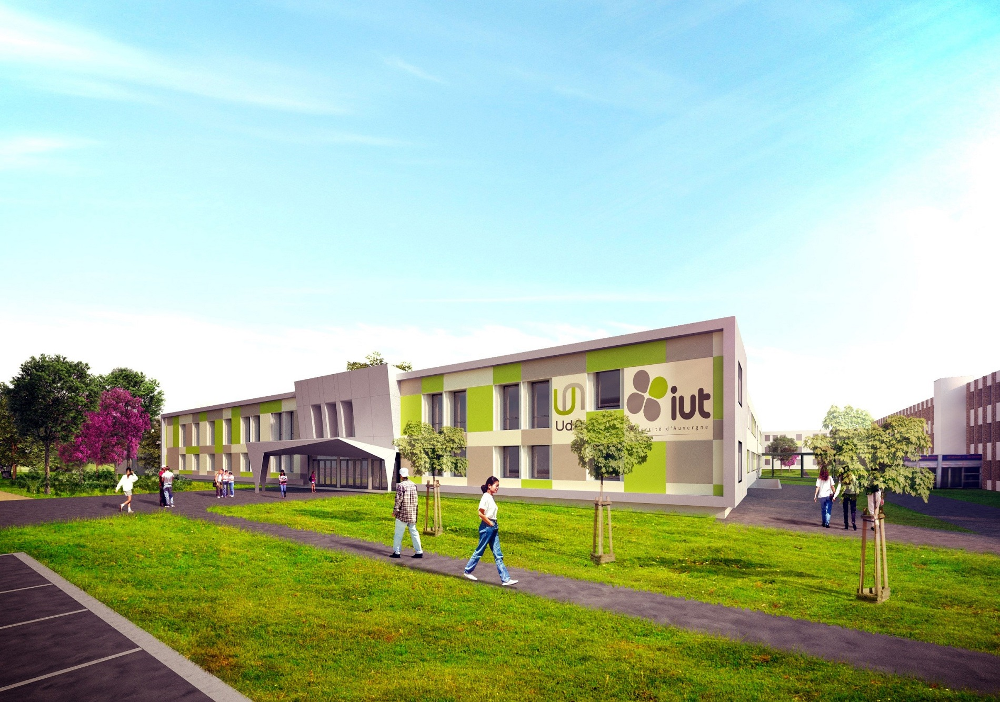
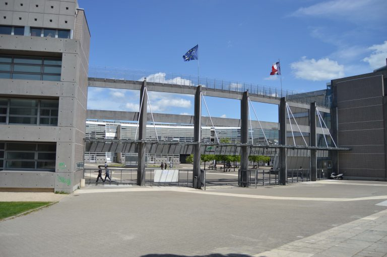
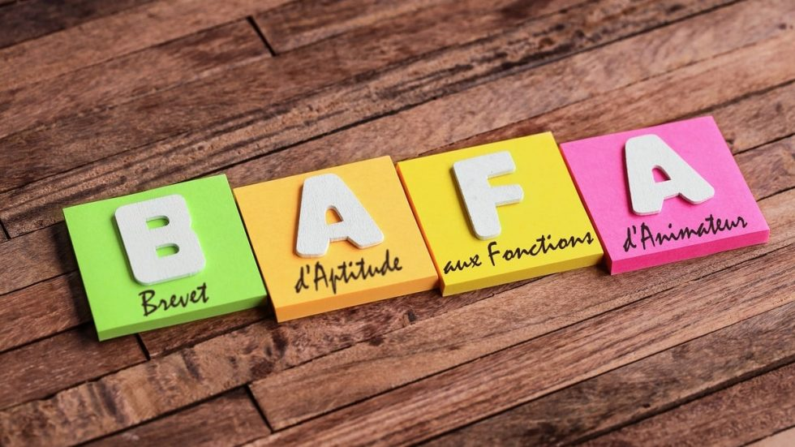
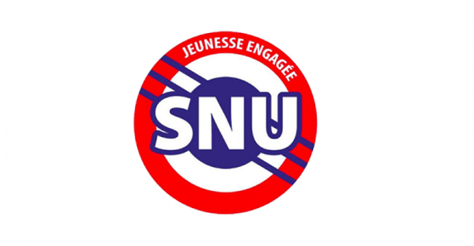

En septembre 2024, j'ai commencé mon BUT informatique, je l'ai intégré directement après l'obtention de mon baccalauréat et j'y étudie pour devenir développeur informatique. Il me permet de développer mes compétences techniques telles que l'apprentissage de Entity Framework, React Native, Kotlin, PHP, C, C++, C#, shell, HTML, CSS et python. Il me permet aussi de développer mes qualités telles que l'autonomie, la rigueur, la communication et le travail d'équipe.

En septembre 2021, je suis entré au lycée Lafayette, là-bas, j'ai découvert la spécialité numérique et sciences de l'informatique. Dans cette spécialité, j'ai pu découvrir les bases de données, python et arduino. C'est grâce à cela que j'ai pu faire pour la première fois de l'informatique, ce qui m'a permis de trouver vers quel domaine je voulais m'orienter. C'est grâce à cette spécialité que j'ai décidé d'intégrer ce BUT.

D'août 2023 à octobre 2024, j'ai passé mon BAFA. Cela m'a permis de trouver un travail pendant les vacances. Grâce au BAFA, j'ai pu apprendre à travailler en équipe, gérer des travaux en équipe et à assumer des responsabilités.

De juin 2022 à mai 2023 j'ai effectué le Service national universel. J'ai passé un un séjour de cohésion de 2 semaines en Isère, avec des personnes que je ne connaissais pas durant lequel nous avons fait des activités et différentes activités pédagogiques. Ce séjour m'a permis développer mon esprit de cohésion. Une fois ce séjour terminé, j'ai effectué ma deuxième partie au sein de la gendarmerie où nous avons effectué du sport et appris les différents métiers sur place. Grâce à cela j'ai pu développer mon sens de la discipline